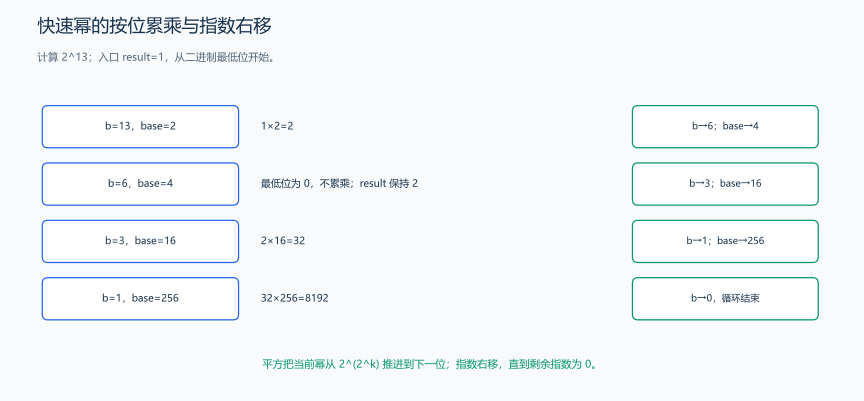
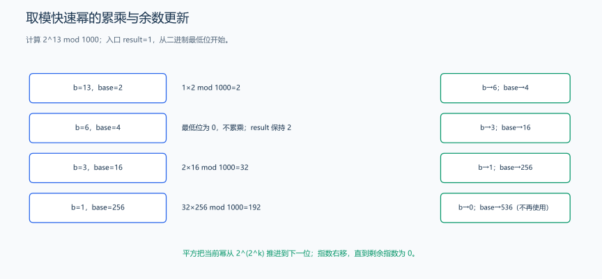

（六） 快速幂
计算 a 的 b 次方，直接连续乘 b 次已经能得到答案；当 b 很大时，把指数拆成二进制，观察哪些重复乘法可以合并成平方。
1. 把指数拆成二进制位
直接计算 \(a^b\)，逐次乘 a 需要 \(O(b)\) 次乘法。快速幂利用指数的二进制表示，把乘法次数降到 \(O(\log b)\)。
例如：
\[ 13=(1101)_2=8+4+1,\qquad a^{13}=a^8\cdot a^4\cdot a \]

每轮检查最低位：若为 1，把当前底数乘进答案；随后底数平方，指数右移一位。
2. 普通整数快速幂
题目原文（自拟）： 给定整数底数和非负指数，计算整数幂，用 long long 保存结果。指数为 0 时返回 1，包括底数为 0 的情况。
把指数的一位与当前底数配起来。 初始底数是 a；每次平方后依次变成 a²、a⁴、a⁸、…。指数每次右移，依次检查原来的第 0、1、2、3 位；该位为 1 才把对应的幂乘进结果。
以 2¹³ 为例，表中记录每轮入口状态和处理结果：
| 剩余指数 | 当前底数 | 最低位 | 处理后的 result |
|---|---|---|---|
| 13 | 2 | 1 | 1×2=2 |
| 6 | 4 | 0 | 2 |
| 3 | 16 | 1 | 2×16=32 |
| 1 | 256 | 1 | 32×256=8192 |
最低位为 0 时只是不累乘，仍需推进到下一位。每轮开始可维护 \(result\times base^{exponent}=a^b\)：取走最低位对应的因子后，剩余指数变成偶数，再把底数平方、指数减半，这个乘积不变。指数为 0 时只剩 result，就是答案。
普通整数版处理完最后一位后，指数已经变为 0，直接返回累乘结果。以 2¹³ 为例，这时答案是 8192，再继续平方不会参与答案计算，所以代码跳过这次平方。
指数按二进制拆分，仅在当前位为 1 时乘入结果。
long long fastPower(long long base, unsigned long long exponent) {
long long result = 1;
while (exponent != 0) {
// 最低位为 1 时，把当前底数对应的这一项乘入答案。
if ((exponent & 1ULL) != 0) {
result *= base;
}
exponent >>= 1;
if (exponent != 0) {
base *= base; // 还有后续位时才需要继续平方
}
}
return result;
}fastPower(2,13) 得到 8192。代码用 unsigned long long 保存指数，用 long long 保存底数与结果；每次乘法仍按“常量、类型转换与整数溢出”一节介绍的整数运算类型计算。指数为 0 时循环执行零次，返回初值 1，因此这里的 fastPower(0,0) 也返回 1。
3. 取模快速幂
题目原文（自拟）： 给定整数 a、非负整数 b 和模数 m，其中 1<=m<=2^31-1，计算 \(a^b\bmod m\)，输出 [0,m) 中的余数。
当答案很大，而题目只要求 \(a^b \bmod m\) 时，可以在每次乘法后取模。
取模后两因子最大为 m-1。题目中的最大模数是 2^31-1，所以乘积最大为 (2^31-2)²，小于 2^63-1，可以用 long long 先算乘积、再取模。这与“常量、类型转换与整数溢出”一节先推导数值大小、再选择类型的过程相同。
取模为什么不会破坏最后的余数？ 若 x 与 r 模 m 同余，y 与 s 模 m 同余，则 xy 与 rs 也模 m 同余，所以每次相乘后立刻取模，最后得到的余数不变。这是在中间过程压小数值，不是在最后才对一个已溢出的结果补救。
对 2¹³ mod 1000，累乘结果依次是 2、2、32、192；最后一步计算 32×256=8192，取模得到 192。所有底数和结果保持在 [0,m)，负底数先规范到这个区间。result=1%m 还覆盖了模数为 1 的情况：它的所有余数都为 0。

图按 2¹³ mod 1000 逐轮列出当前指数、最低位、底数和累乘余数：指数 6 的最低位为 0，结果保持 2；指数 3、1 的最低位为 1，结果先变为 32，最后由 8192 取模得到 192。普通版的最后一轮不再平方，取模版则始终保持底数、结果在合法余数范围。
#include <limits>
#include <stdexcept>
long long modPower(long long base, unsigned long long exponent, long long mod) {
if (mod <= 0 || mod > 2147483647LL) {
throw std::invalid_argument("mod 必须在 [1, 2^31-1] 内");
}
base %= mod;
if (base < 0) {
base += mod;
}
// mod 为 1 时结果应为 0，包括指数为 0 的情况。
long long result = 1 % mod;
while (exponent != 0) {
// 最低位为 1 时，把当前底数对应的这一项乘入答案。
if ((exponent & 1ULL) != 0) {
result = result * base % mod;
}
// 底数平方对应指数下一位；乘法安全依赖前面声明的模数范围。
base = base * base % mod;
exponent >>= 1;
}
return result;
}| 调用 | 结果 | 检查点 |
|---|---|---|
modPower(2, 13, 1000) |
192 |
普通情况 |
modPower(5, 0, 7) |
1 |
指数为 0 |
modPower(5, 0, 1) |
0 |
模数为 1 |
modPower(-2, 3, 5) |
2 |
负底数规范化 |
例如模数为 1000000007 时，两个余数的乘积最多为 1000000006²，long long 可以保存这个中间结果。计算更大的模乘时，还可以学习 GNU C++ 的 __int128 宽整数，或把乘法拆成逐位加法与取模；取模操作始终发生在乘法计算之后。
4. 正确性与应用
循环中保持“已累计的答案乘上剩余底数的剩余次幂，等于原来的幂”这一关系。指数最低位为 1 时取出一个底数因子，再把剩余偶数指数除以 2，同时将底数平方，所以结果不变。
时间 \(O(\log b)\)（b = 0 时直接返回），额外空间 \(O(1)\)。常见用途是大指数取模、矩阵幂和模逆元。
如果 p 是素数，且 a 不是 p 的倍数，那么费马小定理给出：
\[ a^{-1}\equiv a^{p-2}\pmod p \]
例如 a=3、p=7 时，modPower(3,5,7)=5，而 3×5 mod 7=1，所以 5 是 3 的模逆元。逆元让模意义下的除法变成乘法：乘 a 的逆元，就抵消了乘 a 的效果。一般模数 m 下，a 与 m 互质时存在逆元；扩展欧几里得算法可以求它。这里素数模数的 p-2 指数来自费马小定理。
练习题： 洛谷 P1226 — 快速幂、CF 742A — Arpa’s hard exam and Mehrdad’s naive cheat。